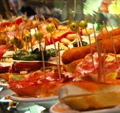
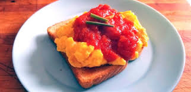

バルセロナのグルメ

パエリア
魚介の旨みがたっぷり詰まったスペインを代表する米料理。レモンを絞ってさっぱりと。

タパス
小皿で少しずつ楽しめるバルセロナの定番。ワインと一緒にどうぞ。

パン・コン・トマテ
トーストしたパンにトマトをすり込み、オリーブオイルと塩で仕上げたシンプル料理。
ガウディ建築と地中海グルメを満喫しよう
スペイン・カタルーニャ州の首都であり、ガウディの建築や美しい海岸線、グルメが楽しめる観光都市です。 芸術と情熱に満ちたこの街は、訪れる人の心を必ず魅了してくれることでしょう。
魚介の旨みがたっぷり詰まったスペインを代表する米料理。レモンを絞ってさっぱりと。
小皿で少しずつ楽しめるバルセロナの定番。ワインと一緒にどうぞ。
トーストしたパンにトマトをすり込み、オリーブオイルと塩で仕上げたシンプル料理。

ガウディが設計した未完成の大聖堂。その壮麗なフォルムに圧倒されます。
色鮮やかなタイルと曲線美が特徴の幻想的なガウディ建築。内部も美術館のよう。